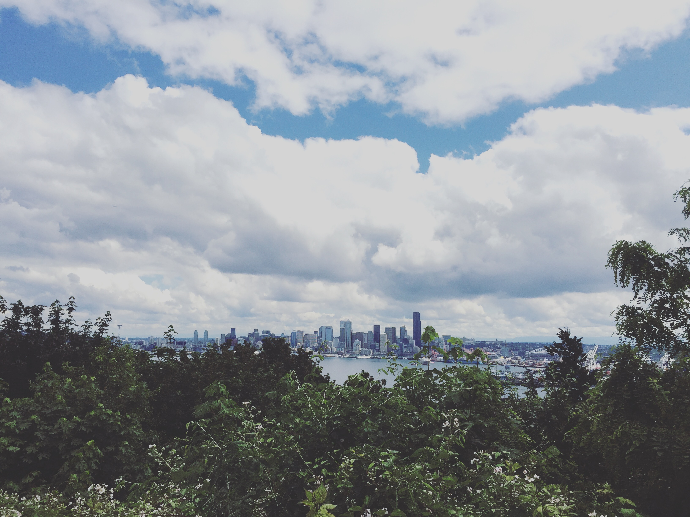
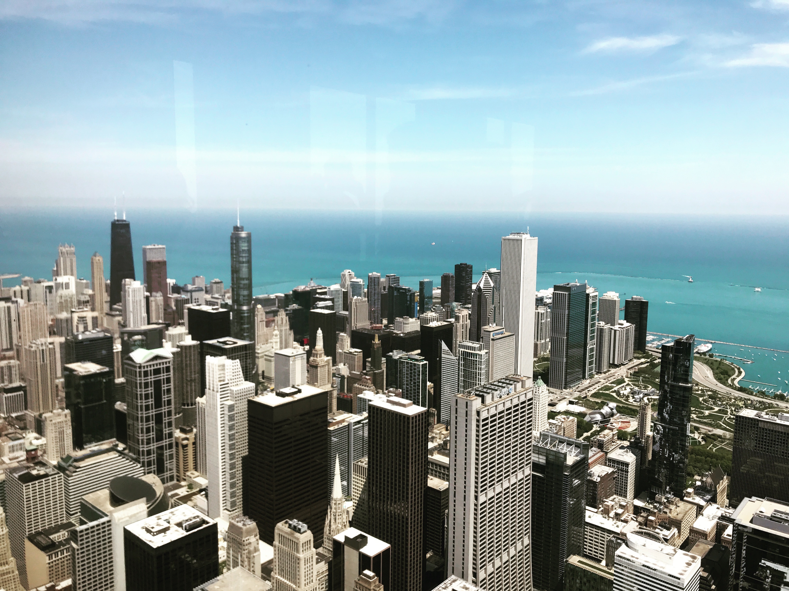
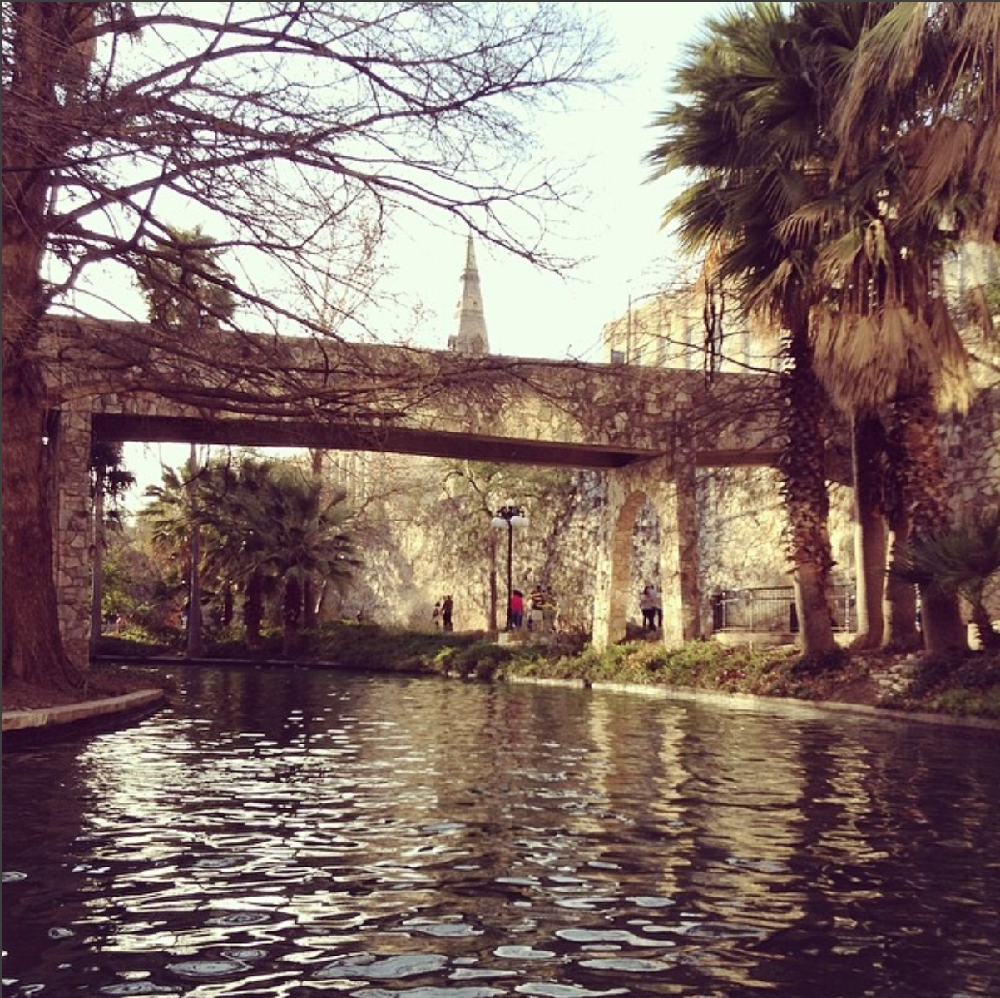

Salt Lake City, Utah
My sister has always been a traveler, and I have been fortunate enough to be able to visit her when she moves around the country. I flew on an airplane for the first time (and by myself!) at age 15 to stay with her in Salt Lake City, and I absolutely loved it. The desert scenery is beautiful, and there's no shortage of things to do there!
Seattle, Washington
When my sister left Salt Lake City, Seattle was the next stop. I have been to Seattle twice, and would love to live there someday. The city is breathtaking, and so full of history and art!
Chicago, Illinois
I went to Chicago for the first time in 2015, and have been back probably 10 times since! Chicago is my absolute favorite city to go to, by far. I plan to move there in the next couple of years, once my programming career has taken off. Since my first glimpse of downtown Chicago that made me fall in love with it, I've gotten to know the ins and outs of the city rather well, and I've only grown to love it more!
Gulf Shores, Alabama
The first vacation I ever went on was to Gulf Shores with my childhood friend when we were about 12 years old. We spent a week on the beach with her family and it was amazing! I knew from that point on that I wanted to experience much more of the world than what I had back in Saint Louis.
San Antonio, Texas
I was in choir in high school, and we went on trips every year to compete with other schools around the country. My senior year, we went to San Antonio. We spent a few days on the Riverwalk in between competitions, and it was really fun to be able to do that with my classmates.